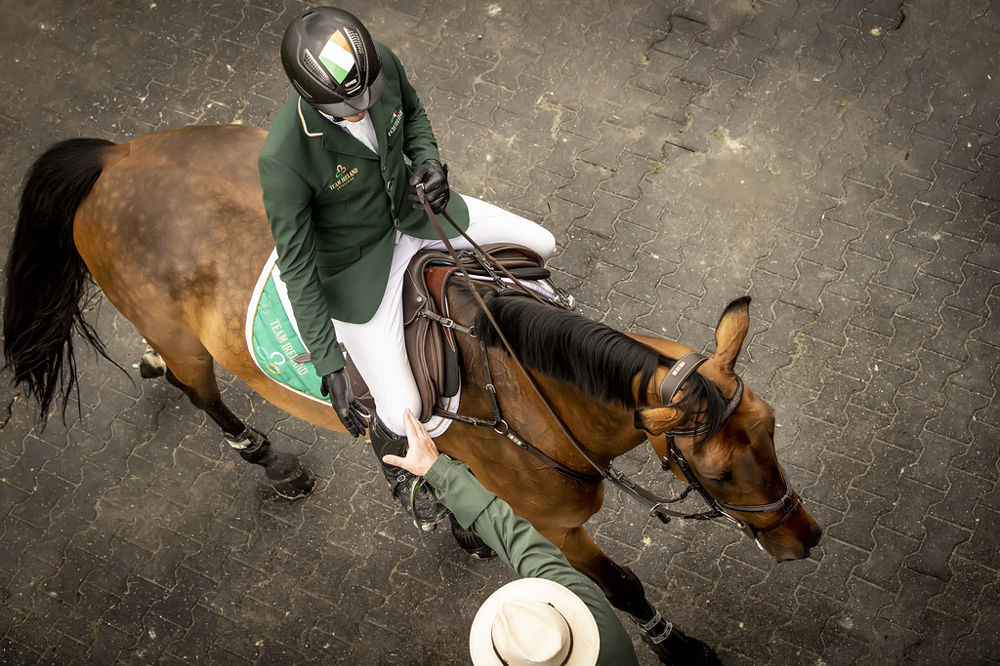

Daniel Coyle logra un triplete histórico en el Spruce Meadows National
El jinete irlandés firmó tres victorias en una misma jornada en Calgary, incluyendo un doblete en la Recon Metal Cup 1.55m con Farrel y Urville Z, además de imponerse en la Mercer Cup con Nord Face VDL.

Uso editorial
Daniel Coyle protagonizó una jornada memorable en el Spruce Meadows National, presentado por Rolex, al conseguir tres triunfos en distintas pruebas disputadas el 11 de junio en las instalaciones canadienses. El jinete irlandés demostró su mejor nivel y la versatilidad de su cuadra con tres binomios diferentes.
La actuación más destacada llegó en la Recon Metal Cup 1.55m, principal prueba clasificatoria para el RBC Grand Prix of Canada del sábado. De los 46 binomios que partieron en el International Ring, solo 12 lograron un recorrido limpio diseñado por Olaf Petersen Jr., con 13 obstáculos repartidos en 605 metros y tiempo permitido de 91 segundos.
En el desempate, Coyle detuvo el cronómetro en 38.63 segundos montando a Farrel, su yegua de confianza. Pero la hazaña no terminó ahí: el propio Coyle ocupó la segunda plaza con Urville Z, mientras su compatriota Conor Swail completó un podio totalmente irlandés a lomos de Clonterm Obolensky. El colombiano Mark Bluman finalizó cuarto y quinto con sus dos monturas, Landon de Nyze y Genial de B'Neville.
"Spruce Meadows es genial. Vienes aquí para los cuatro torneos y te quedas en un mismo lugar, algo que no conseguimos hacer muy a menudo. Los caballos pueden progresar cada semana y puedes saltar en una clase más grande o más pequeña dependiendo de cómo vaya tu semana, por eso es algo muy importante en nuestro calendario", explicó Coyle. "Planeamos venir cada año, porque llegamos a conocer mejor a los caballos antes de salir de gira, pero no solo eso: Spruce Meadows es uno de los mejores lugares del mundo".
Antes, el irlandés ya había conquistado la Mercer Cup 1.40m disputada en el All Canada Ring. De 33 participantes, ocho accedieron al desempate tras el recorrido diseñado por Tom Holden. Coyle y Nord Face VDL marcaron 35.24 segundos para adjudicarse la victoria, por delante del estadounidense Kyle King con Ninja BF y la neozelandesa Katie Laurie con Miss Montreal P.
La jornada en el International Ring había arrancado con la Francis Family Cup 1.50m, donde el belga Jos Verlooy se impuso con Parise Van Den Dael tras un desempate entre cuatro binomios. Verlooy firmó un tiempo de 34.84 segundos para superar a Conor Swail (Kazelli VDL) y al brasileño Gabriel de Matos Machado (Commander HK Z).
El Spruce Meadows National, que se extiende hasta el domingo, ofrece además de competición de alto nivel un amplio programa de actividades familiares, incluyendo exhibiciones en el Nutrien Horizons Pavilion, actuaciones en el Scotiabank Stage, carreras de corgis y dachshunds, los FireFit Championships y la colaboración especial Barbie x Spruce Meadows.
Más información sobre el torneo National | Resultados completos Recon Metal Cup | Ver competiciones en directo
— Redacción de Hípica al Día